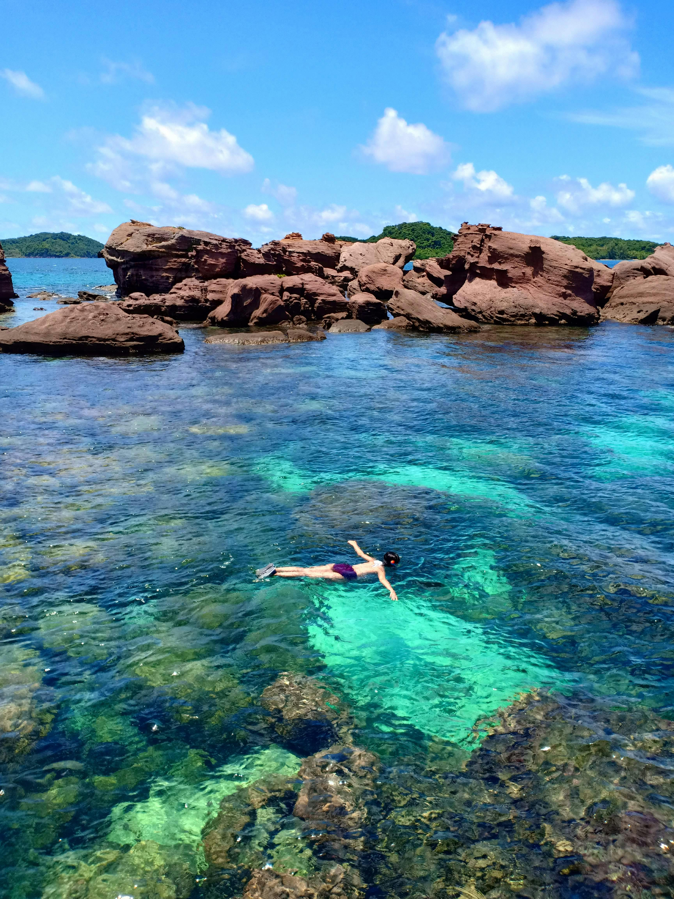

Du Lịch Sơn La
Từ thiên đường nghỉ dưỡng Mộc Châu cho đến đỉnh hoang sơ Tà Xùa, Sơn La sẵn sàng hớp hồn bất cứ tín đồ dịch chuyển nào.
TOP ĐIỂM ĐẾN KHÔNG THỂ BỎ LỠ (MUST-VISIT)
Cao nguyên Mộc Châu "Đà Lạt" của miền Bắc
Đồi chè trái tim & Đồi chè Mộc Sương: Những luống chè xanh mướt uốn lượn trải dài ngút ngàn, điểm check-in "quốc dân" của mọi du khách.
Cầu kính Bạch Long: Cầu kính đi bộ dài nhất thế giới, thử thách lòng can đảm với tầm nhìn ngoạn mục xuống thung lũng sâu.
Rừng thông Bản Áng: Mệnh danh là "Đà Lạt thu nhỏ" với hồ nước trong vắt, rừng thông lãng mạn và các nông trại dâu tây ngọt ngào.
Tà Xùa (Bắc Yên) Thiên đường săn mây
Sống lưng khủng long Háng Đồng: Điểm săn mây và ngắm hoàng hôn đỉnh nhất Tây Bắc với sống núi mỏng manh chạy thẳng vào lòng biển mây.
Cây cô đơn Tà Xùa: Tọa độ sống ảo mang vẻ đẹp cô liêu, bảng lảng giữa mây trời.
Thành phố Sơn La Dấu ấn lịch sử & Văn hóa
Nhà tù Sơn La & Cây đào Tô Hiệu: Di tích lịch sử quốc gia đặc biệt, nơi lưu giữ tinh thần thép của các chiến sĩ cách mạng.
Quảng trường Tây Bắc: Quảng trường lớn nhất vùng với tượng đài Bác Hồ kính yêu.
Ngọc Chiến (Mường La) Miền cổ tích hoang sơ
Nổi tiếng với những nếp nhà rêu phong bằng gỗ pơ-mu và các dòng suối khoáng nóng tự nhiên bản Bon, nơi bạn có thể ngâm mình thư giãn giữa thiên nhiên.
TOUR ẨM THỰC: ĐẬM ĐÀ HƯƠNG VỊ ĐỒNG BÀO
Đến Sơn La mà chưa thử những món này thì hành trình của bạn chưa trọn vẹn:
Thịt trâu gác bếp: Dai, ngọt, thơm mùi khói bếp và hạt mắc khén đặc trưng.
Bê chao Mộc Châu: Thịt bê non mềm, bì giòn sần sật, chao nóng hổi chấm tương bần..

Du Lịch Hòa Bình
Chào mừng bạn đến với Hòa Bình vùng đất "sơn thủy hữu tình" nằm ngay cửa ngõ Tây Bắc, cách trung tâm thủ đô Hà Nội chỉ khoảng 75km. Được thiên nhiên ưu ái ban tặng hệ thống hang động kỳ vĩ, những thung lũng bảng lảng sương mờ cùng hồ nước mênh mông ví như “Vịnh Hạ Long trên núi”, Hòa Bình luôn là điểm đến hoàn hảo cho những chuyến trốn phố "đổi gió" cuối tuần
Top 5 Tọa độ Check-in "Gây Thương Nhớ" tại Hòa Bình.
Thung lũng Mai Châu Bản tình ca dịu dàng
Nằm yên bình giữa những dãy núi đá vôi bạt ngàn, Mai Châu mở ra không gian thơ mộng với những nếp nhà sàn truyền thống của đồng bào người Thái.
Thuê một chiếc xe đạp dạo quanh Bản Lác hay bản Pom Coọng, xúng xính trong những bộ váy thổ cẩm sặc sỡ và hòa mình vào điệu múa xòe, nhảy sạp bên bếp lửa bập bùng.
Hồ Hòa Bình & Thung Nai "Vịnh Hạ Long trên cạn"
Sở hữu lòng hồ nhân tạo khổng lồ với làn nước xanh ngọc bích, Thung Nai mang một vẻ đẹp hoang sơ, tách biệt hoàn toàn với thế giới ồn ào bên ngoài.
Suối khoáng nóng Kim Bôi Trạm sạc năng lượng cho sức khỏe
Nếu bạn đang tìm kiếm một chuyến đi chăm sóc bản thân đúng nghĩa, vùng đất "chén vàng" Kim Bôi chính là câu trả lời.
Đèo Thung Khe (Đèo Đá Trắng) Ngỡ ngàng "ngọn đồi tuyết trắng"
Nằm trên cung đường Quốc lộ 6 hướng đi Mai Châu, ngọn đèo này thu hút giới trẻ bởi những mỏm đá vôi màu trắng xóa tạo nên khung cảnh tựa như trời Âu.
Thiên đường xanh Ba Khan
Được ví như một "hòn đảo" bị lãng quên, Ba Khan là một thung lũng bằng phẳng nằm nép mình sát lòng hồ thủy điện. Nơi đây sở hữu những cánh đồng đá tai mèo và view ngắm trọn dòng sông Đà ngoạn mục từ trên cao.
Thiên đường ẩm thực đậm chất Tây Bắc
Chuyến hành trình khám phá xứ Mường sẽ không thể trọn vẹn nếu bạn bỏ qua những phong vị ẩm thực mộc mạc mà độc đáo tại đây:
Cơm lam & Lợn mán thui luộc: Hạt nếp nương dẻo quánh nướng trong ống tre dứa, ăn kèm thịt lợn mán thả rông thơm ngọt, bì giòn sần sật.
Cá lăng nướng sông Đà: Những thớ thịt cá lăng chắc nịch, béo ngậy được kẹp thanh tre và nướng trên than hồng thơm phức.
Thịt trâu nấu lá lồm: Vị ngọt đậm của thịt trâu hòa quyện hoàn hảo cùng vị chua thanh đặc trưng của lá lồm núi rừng.

Du Lịch Miền Nam
Miền Nam mang vẻ đẹp sôi động, phóng khoáng với nhiều khu du lịch sinh thái và biển đảo. Nổi bật là TP.HCM, Phú Quốc, Cần Thơ và miền Tây sông nước. Đảo Phú Quốc là thành phố đảo đầu tiên của Việt Nam, nằm trong vịnh Thái Lan. * Địa điểm tham quan tiêu biểu: * Bắc đảo: VinWonders, Vinpearl Safari, Grand World (Thành phố không ngủ), Làng chài Rạch Vẹm. * Nam đảo: Cáp treo Hòn Thơm (cáp treo vượt biển dài nhất thế giới), Chùa Hộ Quốc, Bãi Sao, Nhà tù Phú Quốc. * Trải nghiệm: Tour 4 đảo (Hòn Móng Tay, Hòn Mây Rút, Hòn Gầm Ghì, Hòn Thơm), lặn ngắm san hô, câu mực đêm. * Ẩm thực đặc trưng: * Gỏi cá trích: Cá tươi phi lê trộn với hành tây, dừa nạo, ăn kèm rau rừng và nước chấm đậu phộng. * Bún quậy: Sợi bún tươi làm tại chỗ, ăn kèm chả tôm, chả cá, mực và nước chấm tự pha. * Hải sản: Ghẹ Hàm Ninh, nhum biển nướng mỡ hành, còi biên mai nướng muối ớt.